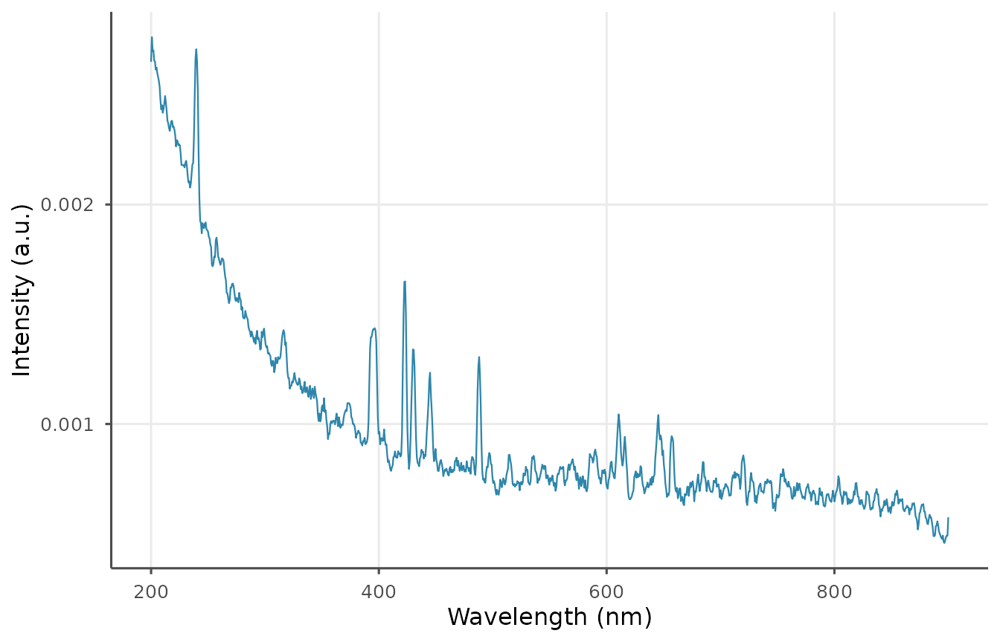

What is libscanR?
libscanR provides a vendor-agnostic pipeline for
Laser-Induced Breakdown Spectroscopy (LIBS) data, including import,
preprocessing, peak detection, calibration, quantification,
chemometrics, spatial mapping, and visualization. It ships with a
curated NIST emission line database and example datasets so every
feature is runnable without real instrument data.
Core data structures
libscanR defines three S3 classes:
-
libs_spectrum— a single spectrum (possibly multi-shot). -
libs_dataset— a collection of spectra sharing a wavelength axis. -
libs_calibration— a fitted calibration model.
A 5-minute tour
Simulate a spectrum
spec <- ls_simulate_spectrum(
elements = c(Ca = 5000, Na = 1000, Fe = 200),
n_channels = 1024,
seed = 1
)
spec
#> <libs_spectrum>
#> • Range: 200-900 nm (1024 channels)
#> • Shots: 10
#> • Sample: "simulated" (synthetic)
#> • Baseline corrected: FALSEPreprocess: baseline, smooth, normalize
spec_proc <- spec |>
ls_baseline(method = "snip", iterations = 40) |>
ls_smooth(method = "moving_avg", window = 5) |>
ls_normalize(method = "total")
ls_plot_spectrum(spec_proc)
Detect and identify peaks
peaks <- ls_find_peaks(spec_proc, snr_threshold = 3)
id <- ls_identify_peaks(peaks, elements = c("Ca", "Na", "Fe"))
head(id[, c("wavelength_nm", "element", "ionization", "nist_aki", "confidence")])
#> # A tibble: 6 × 5
#> wavelength_nm element ionization nist_aki confidence
#> <dbl> <chr> <int> <dbl> <dbl>
#> 1 201. NA NA NA NA
#> 2 240. Ca 1 1.87 0.134
#> 3 212. NA NA NA NA
#> 4 218. NA NA NA NA
#> 5 223. NA NA NA NA
#> 6 231. NA NA NA NARead from a file
tmp <- tempfile(fileext = ".csv")
utils::write.csv(
data.frame(wavelength = spec$wavelength,
intensity = colMeans(spec$intensity)),
tmp, row.names = FALSE
)
spec_in <- ls_read_spectrum(tmp, verbose = FALSE)
unlink(tmp)
spec_in
#> <libs_spectrum>
#> • Range: 200-900 nm (1024 channels)
#> • Shots: 1
#> • Sample: "file204e33286393"
#> • Baseline corrected: FALSEUse example datasets
ds <- ls_example_data("tissue")
summary(ds)
#> <libs_dataset> summary
#> • Spectra: 50
#> • Channels: 1024
#> • Range: 200-900 nm
#> ℹ Group counts (column "material"):
#> material n
#> bone 10
#> fat 10
#> kidney 10
#> liver 10
#> muscle 10
#> ℹ Per-spectrum max intensity: median = 103.79, range =
#> 94.1-643.47